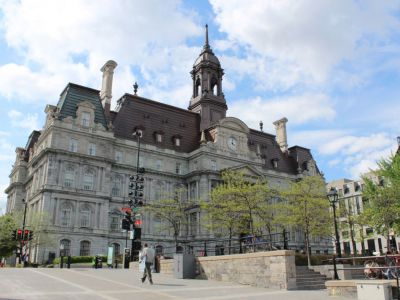
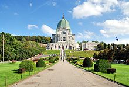
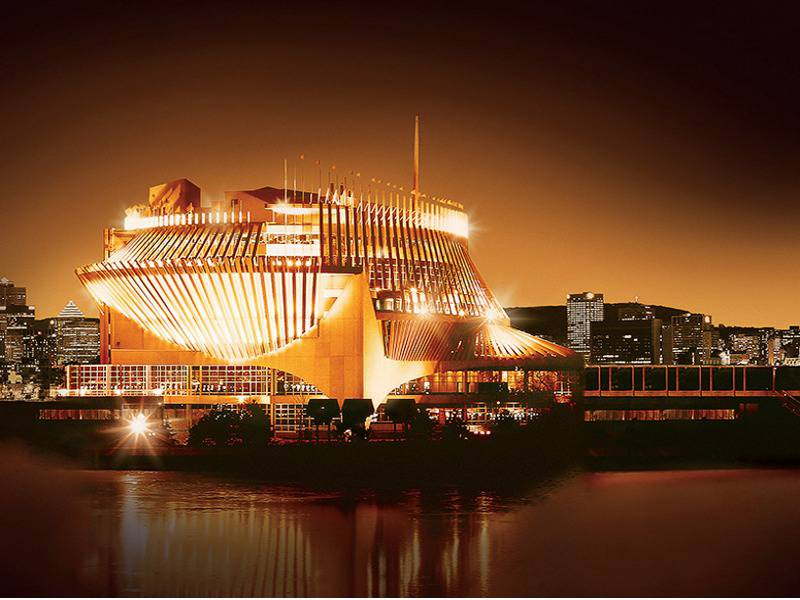
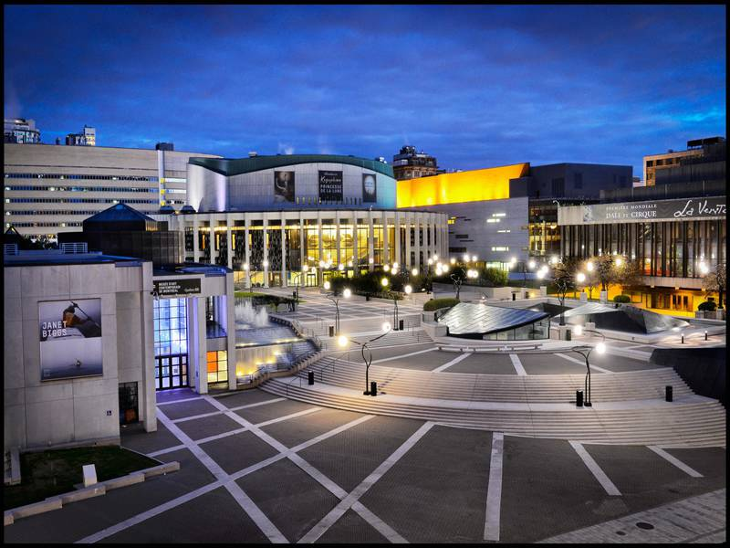

Montreal City Hall is a five storied flashy building exclusively constructed to house the municipal administration. Built in the second empire style, it is one of the most impressive and spectacular buildings in old Montreal. It was constructed between 1872 and 1878 as per the designs suggested by architects Alexander Cowper Hutchison and Henri-Maurice Perrault. This building survived a major fire break in 1922 after which architect Louis Parant completely remodeled the same with more robust construction.
|  |
| Cityhall |
Saint Joseph's Oratory is the largest church in Canada and twenty-seventh largest church building in the world..It is a Roman Catholic minor basilica and national shrine on Westmount Summit in Montreal, Quebec.In 2004, the Oratory was designated a National Historic Site of Canada on the occasion of its 100th anniversary
|
 |
| St.Josephs-Oratorium |
The Montreal Casino is a casino located on the Notre Dame Island in the borough of Ville-Marie in Montreal, Quebec, and is the largest casino in Canada. The casino is open twenty-four hours a day, seven days a week to patrons aged 18 and older.
|  |
| Casino-de-montreal |
The casino consists of three interconnected buildings. Two of these, the French Pavilion and the Québec Pavilion, were built for Expo 67. The third is an annex built by the casino.It has been a non-smoking casino since July 2003,and the former smoking lounges were closed in May 2006 with the passing of a new provincial law.
|  |
| PlacesdesArts |
Place des Arts is a major performing arts centre in Montreal, Quebec, Canada, and the largest cultural and artistic complex in Montreal.Home to the Montreal Symphony Orchestra, Les Grands Ballets Canadiens, and the Opéra de Montréal, the complex is situated between Saint Catherine and de Maisonneuve Streets, and St-Urbain and Jeanne-Mance streets, in an area now known as the Quartier des Spectacles in the borough of Ville-Marie.
.
 |
| Placed'armes |
Place d'Armes is a square in Old Montreal quarter of Montreal, in Quebec, Canada. In the centre, there is a monument in memory of Paul de Chomedey, founder of Montreal.
Place d'Armes is the second oldest public site in Montreal, it was called Place de la Fabrique when it was first developed in 1693, at the request of the Sulpicians, then later renamed Place d'Armes in 1721 when it became the stage of various military events. From 1781 to 1813, it was used as a hay and wood market, then developed as a Victorian garden after it was acquired by the city in 1836.